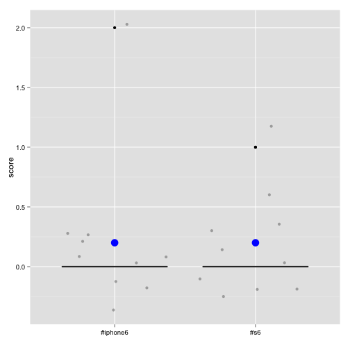

Pull tweets of two given words (hashtag, handle supported) and apply sentiment scoring algorithm.
Generate box plots of the distribution and mean of scores, for sentiment analysis of the two words.
Let's see an example of #iphone6 vs. #s6
library(plyr)
library(stringr)
library(tm)
library(twitteR)
#Twitter OAuth with token cache
origop<-options("httr_oauth_cache")
options(httr_oauth_cache=TRUE)
setup_twitter_oauth("jhDUfOPgDrov0Vcn5IodKa0iN", "FXjD6OWwUEjJtNxuCXhkPglKCAYHdUO2i3kogs8PZBxoBnW3gB", "3163543724-Rs8hQpHN79iK5qCVfFADFAJyNqUhvOsye6KkrxX", "BvF2Cb6JikThKxEAG70HjPEYKQBDlk4CWA8eieb37QuAz")
options(httr_oauth_cache=origop)
#Tweets search and return resultant data frame
searchTweets<-function(searchWord, maxTweets) {
searchResult<-searchTwitter(searchWord, n=maxTweets, lang="en")
searchResultDf<-do.call("rbind", lapply(searchResult, as.data.frame))
searchResultDf$text<-iconv(searchResultDf$text, 'UTF-8', 'ASCII')
return(searchResultDf)
}
#Data preparation on tweets
cleanTweets<-function(tweets) {
#Remove spaces
tweets<-str_replace_all(tweets, " ", " ")
#Remove URLs
tweets<-str_replace_all(tweets, "http://t.co/[a-z,A-Z,0-9]*{8}", "")
#Remove retweet header
tweets<-str_replace(tweets, "RT @[a-z,A-Z]*: ", "")
#Remove hashtags
tweets<-str_replace_all(tweets, "#[a-z,A-Z]*", "")
#Remove screen name references
tweets<-str_replace_all(tweets, "@[a-z,A-Z]*", "")
return(tweets)
}
#Scoring sentiment based on Jeffrey Breen's algorithm: https://jeffreybreen.wordpress.com/2011/07/04/twitter-text-mining-r-slides
score.sentiment = function(sentences, pos.words, neg.words) {
scores = laply(sentences, function(sentence, pos.words, neg.words) {
# clean up sentences with R's regex-driven global substitute, gsub():
sentence = gsub('[[:punct:]]', '', sentence)
sentence = gsub('[[:cntrl:]]', '', sentence)
sentence = gsub('\\d+', '', sentence)
# and convert to lower case:
sentence = tolower(sentence)
# split into words. str_split is in the stringr package
word.list = str_split(sentence, '\\s+')
# sometimes a list() is one level of hierarchy too much
words = unlist(word.list)
# compare our words to the dictionaries of positive & negative terms
pos.matches = match(words, pos.words)
neg.matches = match(words, neg.words)
# match() returns the position of the matched term or NA
# we just want a TRUE/FALSE:
pos.matches = !is.na(pos.matches)
neg.matches = !is.na(neg.matches)
# and conveniently enough, TRUE/FALSE will be treated as 1/0 by sum():
score = sum(pos.matches) - sum(neg.matches)
return(score)
}, pos.words, neg.words)
scores.df = data.frame(score=scores, cleaned_tweets=sentences)
return(scores.df)
}
#Sentiment analysis
sentimentAnalysis<-function(word1tweets, word2tweets, word1, word2) {
#List of positive and negative words from Jeffrey Breen's GitHub: https://github.com/jeffreybreen/twitter-sentiment-analysis-tutorial-201107/tree/master/data/opinion-lexicon-English
positivewords=readLines("positive_words.txt")
negativewords=readLines("negative_words.txt")
#Apply score.sentiment algorithm
word1score=score.sentiment(cleanTweets(word1tweets), positivewords, negativewords)
word2score=score.sentiment(cleanTweets(word2tweets), positivewords, negativewords)
#Add labels [word1] and [word2] for ggplot of the analysis
word1score$word=word1
word2score$word=word2
#Combine scores
sentimentScores<-rbind(word1score, word2score)
}
#Read word 1 and word 2, and search the related tweets
searchResult1<-searchTweets("#iphone6", 10)
searchResult2<-searchTweets("#s6", 10)
#Create sentiment scores
sentimentScores<-sentimentAnalysis(searchResult1$text, searchResult2$text, "#iphone6", "#s6")
## score word
## 1 0 #iphone6
## 2 0 #iphone6
## 3 0 #iphone6
## 4 0 #iphone6
## 5 0 #iphone6
## 6 0 #iphone6
## 7 2 #iphone6
## 8 0 #iphone6
## 9 0 #iphone6
## 10 0 #iphone6
## 11 0 #s6
## 12 0 #s6
## 13 0 #s6
## 14 0 #s6
## 15 1 #s6
## 16 0 #s6
## 17 0 #s6
## 18 0 #s6
## 19 1 #s6
## 20 0 #s6
ggplot(sentimentScores, aes(x=word,y=score,fill=word))+geom_boxplot()+geom_jitter(alpha=.3)+
theme(axis.text.x = element_text(color="black"))+theme(axis.text.y = element_text(color="black"))+theme(legend.position="none")+labs(x="")+
stat_summary(fun.y=mean, geom="point",color="blue", size=5)

The box plot shows the distribution of sentiment scores about each word on Twitter. For each tweet, a net score of positive (> 0), negative (< 0) or neutral (= 0) sentiments is calculated. Blue dots are mean sentiment scores for the two words. We can see the sentiments for Apple iPhone 6 (#iphone6) and Samsung S6 (#s6) are generally positive and similar.
Thank you!